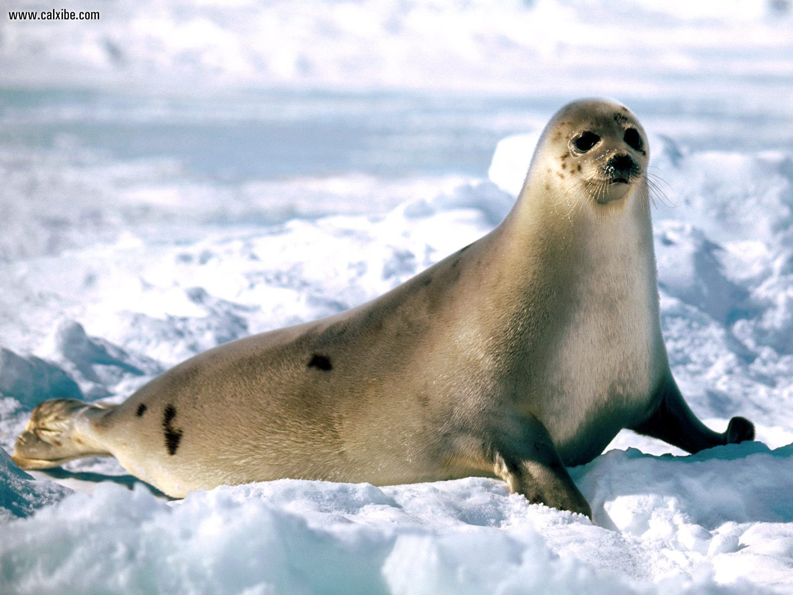
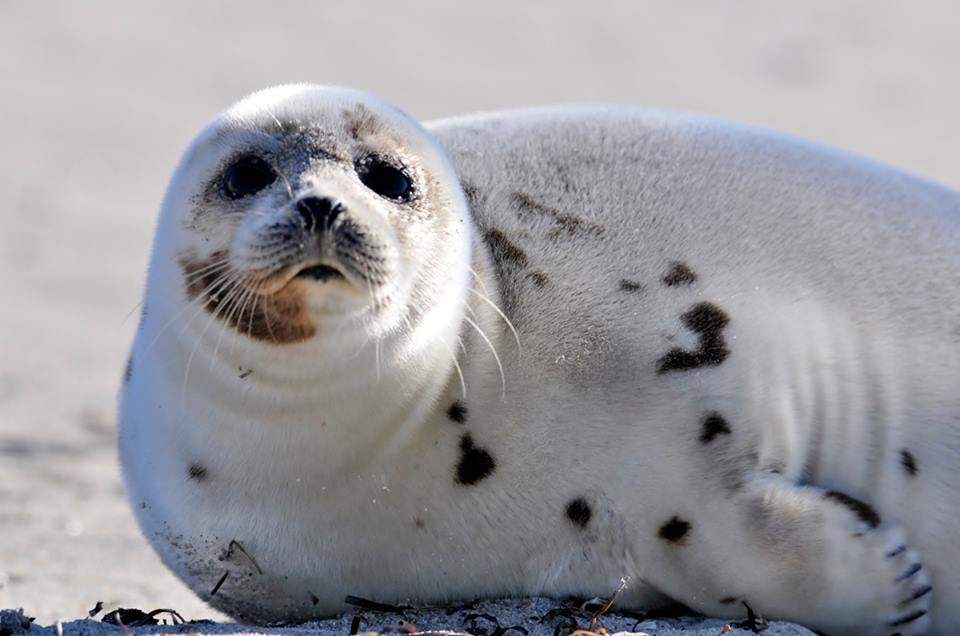

Harp Seal
Medium-sized, grayish earless seal possessing a black harp-shaped or saddle-shaped marking on its back. The harp seal is both the best-known and among the most abundant of all seal species.

Harp Seal Adult
The subsequent growth of dark hair under their white fur produces a grayish coloration, and they are called “graycoats.” Once the white coat is completely shed, the seals become gray with dark spots and are often referred to as “beaters” because of the sound made by their tails as they learn to swim.

Harp Seal Subadult
At birth, pups are known as “whitecoats” because of their pure white pelage. This stage lasts approximately two weeks.

Harp Seal Pup